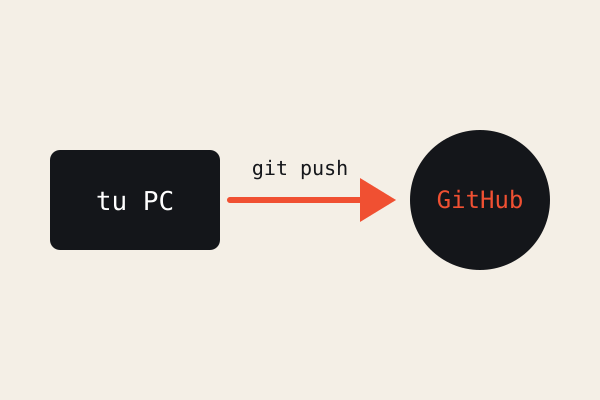

GitHub y colaboración
GitHub aloja tus repositorios en la nube. Con git push subes tus commits y con git pull descargas los de otras personas, así todo el equipo trabaja sobre la versión más reciente.
Para colaborar en un repositorio ajeno, el dueño te agrega como colaborador desde la configuración. A partir de ahí puedes clonar, modificar y subir cambios directamente.
En proyectos grandes se usan pull requests: propones tus cambios desde una rama, el equipo los revisa y, si todo está bien, se integran a main.

Flujo de trabajo en equipo
- Clonar el repositorio con
git clone - Hacer cambios y confirmarlos con
git commit - Subirlos con
git push - Revisar lo que subió el equipo con
git pullsiempre antes de empezar